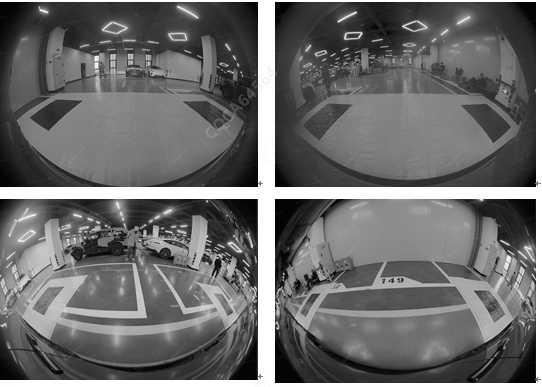
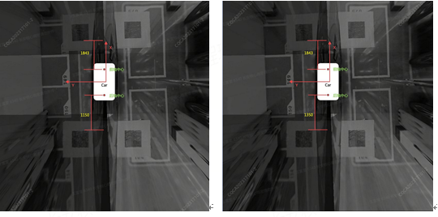

1.拆卸或重新安装过任一环视摄像头总成或前后保险杠、后视镜等位置发生碰撞；
2.车辆发生碰撞；
3.出现需要重新标定DTC故障码；（如B193C0C:AVM未标定OK）
4.环视摄像头总成性能下降（如探测到目标的距离异常或图像显示异常等）；
5.外力等导致环视摄像头总成固定不稳或位置异常。
6.更换中央计算机。
如果车辆进行了拆卸前、后保险杠的操作或重新拆装环视摄像头的操作，需要按照售后标定程序重新对环视摄像头进行标定。
诊断仪
1、尽量选择宽敞的室内环境，周围没有障碍物的场景，避免光照强烈的场景。如下图所示：

上图中，有宽敞的空间可以将黑色方格铺布铺平，且周围没有障碍物遮挡。
汽车摆正，静止停放。使用卷尺测量距离，按照下图所示的距离铺布：

铺布操作是将前向铺布的中心位置和汽车前轴中心对齐，沿着X轴，向前移动，使得铺布上的黑块和前轴中心沿X轴的距离为1843mm。后向铺布的中心位置和汽车后轴中心对齐，沿着X轴负方向，向后移动，使得铺布上的黑块和后轴中心沿X轴的距离为1150mm。上述距离无需精确到毫米，大致合适就行。